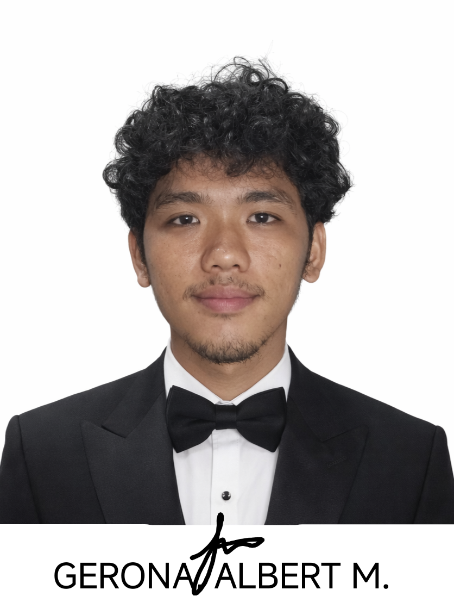

Age: 23
Course: Bchelor of Science in Information System.
Passionate Information System student and active SK Councilor committed to youth empowerment and community development. Demonstrates strong leadership, teamwork, and organizational skills through planning and implementing local programs, promoting civic engagement, and managing youth-oriented projects. Balances academic excellence with public service responsibilities.
youth leader elected to represent our barangay’s young constituents, working to promote programs on education, health, environment, sports, and community development while ensuring the voices of the youth are heard in local governance.